Assignment 2#
# Install h5py if not already installed.
# The GalaxiesML dataset is stored in HDF5 format, so we need this library to read the data files.
import h5py
import numpy as np
import torch
import torch.nn as nn
import torchvision
from torchvision import datasets
from torchvision import transforms
from torch.utils.data import Dataset, DataLoader
import gdown
import torch.optim as optim
import copy
# URL of the shared Google Drive folder
# folder_url = 'https://drive.google.com/drive/folders/1oeYTxEuQ2aVb5HyK1TdcG0gRk_rChaVk?usp=sharing'
# Download the folder
# gdown.download_folder(folder_url, quiet=False, use_cookies=False)
# URL of the shared Google Drive folder
folder_url = 'https://drive.google.com/drive/folders/1oeYTxEuQ2aVb5HyK1TdcG0gRk_rChaVk?usp=sharing'
# Download the folder
#gdown.download_folder(folder_url, quiet=False, use_cookies=False)
file_path = "./assignment2/small_training_dataset.hdf5"
# Open the file and list all dataset keys
with h5py.File(file_path, "r") as f:
print("Available keys (datasets) in the file:", list(f.keys()))
images = f["image"][:, :3, :, :] # Select all images, first 3 channels (g, r, i), 64x64 pixels
targets = f["specz_redshift"][:] # Load the spectroscopic redshift targets
Available keys (datasets) in the file: ['coord', 'dec', 'g_central_image_pop_10px_rad', 'g_central_image_pop_15px_rad', 'g_central_image_pop_5px_rad', 'g_cmodel_mag', 'g_cmodel_magsigma', 'g_ellipticity', 'g_half_light_radius', 'g_isophotal_area', 'g_major_axis', 'g_minor_axis', 'g_peak_surface_brightness', 'g_petro_rad', 'g_pos_angle', 'g_sersic_index', 'i_central_image_pop_10px_rad', 'i_central_image_pop_15px_rad', 'i_central_image_pop_5px_rad', 'i_cmodel_mag', 'i_cmodel_magsigma', 'i_ellipticity', 'i_half_light_radius', 'i_isophotal_area', 'i_major_axis', 'i_minor_axis', 'i_peak_surface_brightness', 'i_petro_rad', 'i_pos_angle', 'i_sersic_index', 'image', 'object_id', 'r_central_image_pop_10px_rad', 'r_central_image_pop_15px_rad', 'r_central_image_pop_5px_rad', 'r_cmodel_mag', 'r_cmodel_magsigma', 'r_ellipticity', 'r_half_light_radius', 'r_isophotal_area', 'r_major_axis', 'r_minor_axis', 'r_peak_surface_brightness', 'r_petro_rad', 'r_pos_angle', 'r_sersic_index', 'ra', 'skymap_id', 'specz_dec', 'specz_flag_homogeneous', 'specz_mag_i', 'specz_name', 'specz_ra', 'specz_redshift', 'specz_redshift_err', 'x_coord', 'x_coord_x', 'x_coord_y', 'y_central_image_pop_10px_rad', 'y_central_image_pop_15px_rad', 'y_central_image_pop_5px_rad', 'y_cmodel_mag', 'y_cmodel_magsigma', 'y_coord', 'y_coord_x', 'y_coord_y', 'y_ellipticity', 'y_half_light_radius', 'y_isophotal_area', 'y_major_axis', 'y_minor_axis', 'y_peak_surface_brightness', 'y_petro_rad', 'y_pos_angle', 'y_sersic_index', 'z_central_image_pop_10px_rad', 'z_central_image_pop_15px_rad', 'z_central_image_pop_5px_rad', 'z_cmodel_mag', 'z_cmodel_magsigma', 'z_ellipticity', 'z_half_light_radius', 'z_isophotal_area', 'z_major_axis', 'z_minor_axis', 'z_peak_surface_brightness', 'z_petro_rad', 'z_pos_angle', 'z_sersic_index']
# Compute per-channel percentiles based on pixel values
# First, flatten the pixels per channel
pixel_values = [images[:, c, :, :].flatten() for c in range(3)]
# Compute robust bounds using the 0.05th and 99.95th percentiles
percentile_min = [np.percentile(pixel_values[c], 1.) for c in range(3)]
percentile_max = [np.percentile(pixel_values[c], 99.) for c in range(3)]
y_mean = np.mean(targets)
y_std = np.std(targets)
del pixel_values # Delete to free up memory and stay within Colab's limits.
def preprocess_images(images, percentile_min, percentile_max):
"""
For each channel:
1. Clip values below the min percentile and above the max percentile.
2. Apply min-max scaling so that the resulting values are in [0,1].
"""
# Make a copy so the original images are not modified
#images = images.copy()
# For each of the 3 channels, clip then scale
for c in range(3):
# Clip to the robust range
images[c, :, :] = np.clip(images[c, :, :], percentile_min[c], percentile_max[c])
# Min-max scaling using the clipped range
images[c, :, :] = (images[c, :, :] - percentile_min[c]) / (percentile_max[c] - percentile_min[c])
# In this problem, feel free to explore other scaling
return images
def preprocess_batch(images_batch, percentile_min, percentile_max):
"""
Apply preprocess_images to each image in a batch.
images_batch: NumPy array of shape (N, 3, H, W)
Returns an array of the same shape with each image preprocessed.
"""
# Create an output array
preprocessed = np.empty_like(images_batch)
N = images_batch.shape[0]
for i in range(N):
preprocessed[i] = preprocess_images(images_batch[i], percentile_min, percentile_max)
return preprocessed
# Preprocess the images
preprocessed_images = preprocess_batch(images, percentile_min, percentile_max)
# Print new min and max for each channel to verify that scaling is in [0,1]
print("New pixel value ranges per channel after clipping & scaling:")
channel_values = []
for c in range(3):
channel_values.append(preprocessed_images[:, c, :, :].flatten())
print(f"Channel {c+1}: min = {np.min(channel_values[c]):.4f}, max = {np.max(channel_values[c]):.4f}")
New pixel value ranges per channel after clipping & scaling:
Channel 1: min = 0.0000, max = 1.0000
Channel 2: min = 0.0000, max = 1.0000
Channel 3: min = 0.0000, max = 1.0000
class GalaxyDataset(Dataset):
def __init__(self, hdf5_file, target_key="specz_redshift", transform=None, normalize_target=True, pix_min = percentile_min, pix_max = percentile_max, y_mean = y_mean, y_std= y_std):
self.hdf5_file = hdf5_file
self.target_key = target_key
self.transform = transform # Store transform
self.normalize_target = normalize_target # Enable/Disable target normalization
self.percentile_min, self.percentile_max = pix_min, pix_max
self.target_mean, self.target_std = y_mean, y_std
# Open file once, but don't load the entire dataset
with h5py.File(self.hdf5_file, "r") as f:
self.dataset_length = len(f["image"]) # Get number of samples
def __len__(self):
return self.dataset_length
def __getitem__(self, idx):
with h5py.File(self.hdf5_file, "r") as f:
# images have five imaging filters g (blue), r (red), i (infrared), z (deep infrared), y (very deep infrared)
image = f["image"][idx, :3, :, :] # Load only first 3 channels
# the spectroscopic redshift is the target
target = f[self.target_key][idx]
# Normalize the image per-channel
image = preprocess_images(image, self.percentile_min, self.percentile_max)
# Normalize target using computed mean/std
target = (target - self.target_mean) / self.target_std
return torch.tensor(image, dtype=torch.float32), torch.tensor(target, dtype=torch.float32)
training_dataset_path = "assignment2/small_training_dataset.hdf5"
validation_dataset_path = "assignment2/small_validation_dataset.hdf5"
testing_dataset_path = "assignment2/small_testing_dataset.hdf5"
# Create dataset instances
train_transform = None # We'll define this later if needed
train_dataset = GalaxyDataset(training_dataset_path, transform=train_transform)
val_dataset = GalaxyDataset(validation_dataset_path)
test_dataset = GalaxyDataset(testing_dataset_path)
# Use DataLoader for efficient batch processing
train_loader = DataLoader(train_dataset, batch_size=32, shuffle=True, num_workers=2)
val_loader = DataLoader(val_dataset, batch_size=32, shuffle=False, num_workers=2)
test_loader = DataLoader(test_dataset, batch_size=32, shuffle=False, num_workers=2)
# Check if DataLoader is working
for images, targets in train_loader:
print(f"Batch shape: {images.shape}, Targets shape: {targets.shape}")
break # Check only one batch
Batch shape: torch.Size([32, 3, 64, 64]), Targets shape: torch.Size([32])
import matplotlib.pyplot as plt
# Function to display 5 sample images from DataLoader
def show_sample_images(data_loader, num_samples=5):
# Get a batch of images
images, targets = next(iter(data_loader)) # Fetch one batch
fig, axes = plt.subplots(1, num_samples, figsize=(15, 5))
for i in range(num_samples):
image = images[i] # Get image tensor (3,64,64)
target = targets[i] # Get target tensor
# Convert from (3,64,64) to (64,64,3) for visualization
image = image.permute(1, 2, 0).numpy()
# Clip values to [0,1] to avoid display issues
#image = np.clip(image, 0, 1)
axes[i].imshow(image)
axes[i].set_title(f"redshift : {target.item()*y_std + y_mean:.4f}")
axes[i].axis("off")
print(np.min(image), np.max(image))
plt.show()
# Show 5 sample images from DataLoader
show_sample_images(train_loader)
0.0 0.3019585
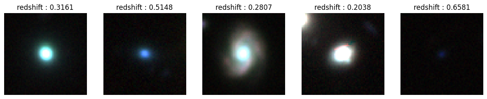
Question 1#
import torch.nn as nn
import torch.nn.functional as F
class GalaxyRedshiftCNN(nn.Module):
def __init__(self):
super(GalaxyRedshiftCNN, self).__init__()
# First convolutional block
# Input: (batch_size, 3, 64, 64)
# Output: (batch_size, 32, 32, 32)
self.conv1 = nn.Conv2d(in_channels=3, out_channels=32, kernel_size=3, padding=1)
self.relu1 = nn.ReLU()
self.pool1 = nn.MaxPool2d(kernel_size=2, stride=2)
# Second convolutional block
# Input: (batch_size, 32, 32, 32)
# Output: (batch_size, 64, 16, 16)
self.conv2 = nn.Conv2d(in_channels=32, out_channels=64, kernel_size=3, padding=1)
self.relu2 = nn.ReLU()
self.pool2 = nn.MaxPool2d(kernel_size=2, stride=2)
# Third convolutional block
# Input: (batch_size, 64, 16, 16)
# Output: (batch_size, 128, 8, 8)
self.conv3 = nn.Conv2d(in_channels=64, out_channels=128, kernel_size=3, padding=1)
self.relu3 = nn.ReLU()
self.pool3 = nn.MaxPool2d(kernel_size=2, stride=2)
# Flatten layer
self.flatten = nn.Flatten()
# Fully connected layers
# Input: (batch_size, 128*8*8)
# Output: (batch_size, 256)
self.fc1 = nn.Linear(128 * 8 * 8, 256)
self.relu4 = nn.ReLU()
# Output layer
# Input: (batch_size, 256)
# Output: (batch_size, 1)
self.fc2 = nn.Linear(256, 1)
def forward(self, x):
# First block
x = self.conv1(x)
x = self.relu1(x)
x = self.pool1(x)
# Second block
x = self.conv2(x)
x = self.relu2(x)
x = self.pool2(x)
# Third block
x = self.conv3(x)
x = self.relu3(x)
x = self.pool3(x)
# Flatten
x = self.flatten(x)
# Fully connected layers
x = self.fc1(x)
x = self.relu4(x)
x = self.fc2(x)
# Return the predicted redshift
return x
# Initialize model, loss function, and optimizer
device = torch.device("cuda" if torch.cuda.is_available() else "cpu")
print(f"Using device: {device}")
model = GalaxyRedshiftCNN().to(device)
criterion = nn.MSELoss()
optimizer = optim.Adam(model.parameters(), lr=0.001)
# Define training function
def train(model, train_loader, val_loader, criterion, optimizer, num_epochs=20):
# Lists to store metrics
train_losses = []
val_losses = []
# Best validation loss and corresponding model
best_val_loss = float('inf')
best_model_weights = None
for epoch in range(num_epochs):
# Training phase
model.train()
running_loss = 0.0
for images, targets in train_loader:
images, targets = images.to(device), targets.to(device)
# Zero the parameter gradients
optimizer.zero_grad()
# Forward pass
outputs = model(images)
# Reshape targets to match outputs
targets = targets.view(-1, 1)
# Calculate loss
loss = criterion(outputs, targets)
# Backward pass and optimize
loss.backward()
optimizer.step()
# Update running loss
running_loss += loss.item() * images.size(0)
# Calculate average training loss for this epoch
epoch_train_loss = running_loss / len(train_loader.dataset)
train_losses.append(epoch_train_loss)
# Validation phase
model.eval()
running_val_loss = 0.0
with torch.no_grad():
for images, targets in val_loader:
images, targets = images.to(device), targets.to(device)
# Forward pass
outputs = model(images)
# Reshape targets to match outputs
targets = targets.view(-1, 1)
# Calculate loss
val_loss = criterion(outputs, targets)
# Update running validation loss
running_val_loss += val_loss.item() * images.size(0)
# Calculate average validation loss for this epoch
epoch_val_loss = running_val_loss / len(val_loader.dataset)
val_losses.append(epoch_val_loss)
# Save the best model based on validation loss
if epoch_val_loss < best_val_loss:
best_val_loss = epoch_val_loss
best_model_weights = copy.deepcopy(model.state_dict())
# Print progress
print(f"Epoch {epoch+1}/{num_epochs}, "
f"Train Loss: {epoch_train_loss:.6f}, "
f"Validation Loss: {epoch_val_loss:.6f}")
# Load best model weights
model.load_state_dict(best_model_weights)
return model, train_losses, val_losses
Using device: cuda
# Train the model
num_epochs = 30
trained_model, train_losses, val_losses = train(model, train_loader, val_loader, criterion, optimizer, num_epochs)
# Save the trained model
torch.save(trained_model.state_dict(), 'galaxy_redshift_cnn.pth')
Epoch 1/30, Train Loss: 0.223211, Validation Loss: 0.254283
Epoch 2/30, Train Loss: 0.214754, Validation Loss: 0.235315
Epoch 3/30, Train Loss: 0.208067, Validation Loss: 0.236527
Epoch 4/30, Train Loss: 0.200966, Validation Loss: 0.243350
Epoch 5/30, Train Loss: 0.197500, Validation Loss: 0.241159
Epoch 6/30, Train Loss: 0.188129, Validation Loss: 0.244872
Epoch 7/30, Train Loss: 0.182125, Validation Loss: 0.237767
Epoch 8/30, Train Loss: 0.174111, Validation Loss: 0.239269
Epoch 9/30, Train Loss: 0.164343, Validation Loss: 0.253599
Epoch 10/30, Train Loss: 0.157745, Validation Loss: 0.255493
Epoch 11/30, Train Loss: 0.150412, Validation Loss: 0.255124
Epoch 12/30, Train Loss: 0.141702, Validation Loss: 0.241571
Epoch 13/30, Train Loss: 0.130453, Validation Loss: 0.278607
Epoch 14/30, Train Loss: 0.127686, Validation Loss: 0.251932
Epoch 15/30, Train Loss: 0.115701, Validation Loss: 0.268405
Epoch 16/30, Train Loss: 0.108862, Validation Loss: 0.247175
Epoch 17/30, Train Loss: 0.099083, Validation Loss: 0.265853
Epoch 18/30, Train Loss: 0.095456, Validation Loss: 0.277215
Epoch 19/30, Train Loss: 0.085428, Validation Loss: 0.271382
Epoch 20/30, Train Loss: 0.079617, Validation Loss: 0.270137
Epoch 21/30, Train Loss: 0.074462, Validation Loss: 0.281661
Epoch 22/30, Train Loss: 0.066662, Validation Loss: 0.260293
Epoch 23/30, Train Loss: 0.066510, Validation Loss: 0.277234
Epoch 24/30, Train Loss: 0.059487, Validation Loss: 0.267256
Epoch 25/30, Train Loss: 0.054528, Validation Loss: 0.272202
Epoch 26/30, Train Loss: 0.049015, Validation Loss: 0.265858
Epoch 27/30, Train Loss: 0.048522, Validation Loss: 0.267050
Epoch 28/30, Train Loss: 0.046792, Validation Loss: 0.276841
Epoch 29/30, Train Loss: 0.043192, Validation Loss: 0.275666
Epoch 30/30, Train Loss: 0.040229, Validation Loss: 0.267679
Question 2: Plot training and validation loss curves#
# Question 2: Plot training and validation loss curves
import matplotlib.pyplot as plt
plt.figure(figsize=(10, 6))
plt.plot(range(1, len(train_losses) + 1), train_losses, label='Training Loss')
plt.plot(range(1, len(val_losses) + 1), val_losses, label='Validation Loss')
plt.xlabel('Epochs')
plt.ylabel('Loss (MSE)')
plt.title('Training and Validation Loss')
plt.legend()
plt.grid(True)
plt.savefig('learning_curves.png')
plt.show()
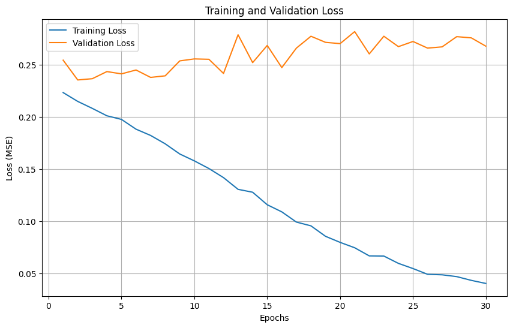
Analysis:#
At the first few epochs, both the training and validation loss declines. At about 3-7th epoch the validation loss reaches the lowest, and after 7th epoch, the validation loss started to rise and fluctuate, and this is an obvious sign of overfitting. Therefore, the best model should be at about 3-7th epoch
Question 3: Evaluate model on test dataset#
# Question 3: Evaluate model on test dataset
def evaluate_model(model, test_loader, criterion, device):
model.eval()
test_loss = 0.0
all_predictions = []
all_targets = []
with torch.no_grad():
for images, targets in test_loader:
images, targets = images.to(device), targets.to(device)
# Forward pass
outputs = model(images)
# Reshape targets to match outputs
targets = targets.view(-1, 1)
# Calculate loss
loss = criterion(outputs, targets)
test_loss += loss.item() * images.size(0)
# Store predictions and targets for further analysis
# Convert back to original scale
predictions = outputs * y_std + y_mean
original_targets = targets * y_std + y_mean
all_predictions.extend(predictions.cpu().numpy())
all_targets.extend(original_targets.cpu().numpy())
# Calculate average test loss
test_loss = test_loss / len(test_loader.dataset)
print(f"Test Loss (MSE): {test_loss:.6f}")
return test_loss, np.array(all_predictions), np.array(all_targets)
# Evaluate the model
test_loss, predictions, targets = evaluate_model(model, test_loader, criterion, device)
Test Loss (MSE): 0.245845
Analysis#
The Test loss 0.245845 is close to the validation loss in epoch 3 where we get our optimal modelweight with minimum validation loss. This suggests that the model is indeed able to learn some patterns and make reasonable predictions on new data, but its generalization ability is limited because 0.2458 is not a small error. Maybe this is because the redshift is a physical phenominon that may have complex pattern and that is why the test loss occurs.
Question 4: Plot Predicted vs. True Redshift#
# Question 4: Plot Predicted vs. True Redshift
plt.figure(figsize=(10, 8))
# Create scatter plot
plt.scatter(targets, predictions, alpha=0.5)
# Add perfect prediction line
min_val = min(np.min(targets), np.min(predictions))
max_val = max(np.max(targets), np.max(predictions))
plt.plot([min_val, max_val], [min_val, max_val], 'r--', label='Perfect Prediction')
plt.xlabel('True Redshift')
plt.ylabel('Predicted Redshift')
plt.title('Predicted vs. True Redshift on Test Dataset')
plt.legend()
plt.grid(True)
plt.axis('equal')
plt.savefig('predicted_vs_true.png')
plt.show()
# Calculate correlation coefficient
correlation = np.corrcoef(targets.flatten(), predictions.flatten())[0, 1]
print(f"Correlation coefficient: {correlation:.4f}")
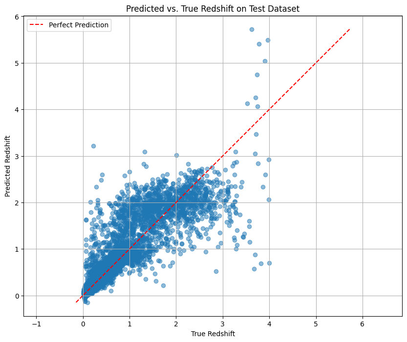
Correlation coefficient: 0.8719
Analysis#
The correlation coefficient is 0.8719, indicating that there is a strong positive correlation between the predicted value and the true value。 This suggests that the models does learn the ralation between redshift and image
Most of the data points are distributed around the perfect prediction line, indicating that the model is roughly able to capture the trend of redshifts. But there are also some problems: the model prediction has high variance when estimating high redshift and this means the model is not solid enough to predict high redshift.
# Question 5: Create histogram of relative redshift error
# Question 5: Create histogram of relative redshift error
# Calculate relative error: (predicted - true) / true
relative_errors = (predictions.flatten() - targets.flatten()) / targets.flatten()
# Remove extreme outliers for better visualization (if any)
q1, q3 = np.percentile(relative_errors, [25, 75])
iqr = q3 - q1
lower_bound = q1 - 1.5 * iqr
upper_bound = q3 + 1.5 * iqr
filtered_errors = relative_errors[(relative_errors >= lower_bound) & (relative_errors <= upper_bound)]
plt.figure(figsize=(10, 6))
plt.hist(filtered_errors, bins=50, alpha=0.7, color='blue')
plt.axvline(x=0, color='r', linestyle='--', linewidth=1)
plt.xlabel('Relative Error: (Predicted - True) / True')
plt.ylabel('Frequency')
plt.title('Distribution of Relative Redshift Error')
plt.grid(True)
plt.savefig('relative_error_histogram.png')
plt.show()
# Calculate statistics
mean_error = np.mean(relative_errors)
median_error = np.median(relative_errors)
std_error = np.std(relative_errors)
print(f"Mean relative error: {mean_error:.4f}")
print(f"Median relative error: {median_error:.4f}")
print(f"Standard deviation of relative error: {std_error:.4f}")
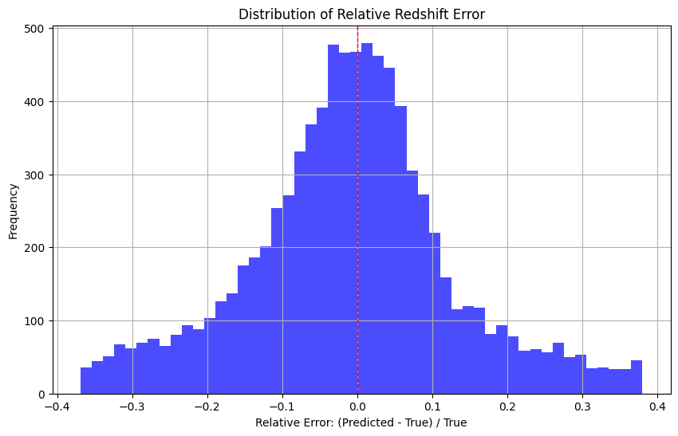
Mean relative error: 0.1028
Median relative error: 0.0030
Standard deviation of relative error: 0.7402
Analysis#
The distribution is similar to Normal Distribution. The overall performance of the model is reasonable, and most of the prediction errors are concentrated in a small range, and the median error is close to zero.
However, the distribution is right-skewed, with a positive mean error, indicating that there is a slight tendency to overestimate the redshift of the model in general. The large standard deviation (0.7402) indicates the instability of the prediction and the presence of outliers.
Question 6: Add dropout for regularization#
# Question 6: Add dropout for regularization
class GalaxyRedshiftCNN_Dropout(nn.Module):
def __init__(self, dropout_rate=0.5):
super(GalaxyRedshiftCNN_Dropout, self).__init__()
# First convolutional block
self.conv1 = nn.Conv2d(in_channels=3, out_channels=32, kernel_size=3, padding=1)
self.relu1 = nn.ReLU()
self.pool1 = nn.MaxPool2d(kernel_size=2, stride=2)
# Second convolutional block
self.conv2 = nn.Conv2d(in_channels=32, out_channels=64, kernel_size=3, padding=1)
self.relu2 = nn.ReLU()
self.pool2 = nn.MaxPool2d(kernel_size=2, stride=2)
# Third convolutional block
self.conv3 = nn.Conv2d(in_channels=64, out_channels=128, kernel_size=3, padding=1)
self.relu3 = nn.ReLU()
self.pool3 = nn.MaxPool2d(kernel_size=2, stride=2)
# Flatten layer
self.flatten = nn.Flatten()
# Dropout after flatten (before first fully connected layer)
#self.dropout1 = nn.Dropout(dropout_rate)
# Fully connected layers
self.fc1 = nn.Linear(128 * 8 * 8, 256)
self.relu4 = nn.ReLU()
# Dropout after first fully connected layer
self.dropout2 = nn.Dropout(dropout_rate)
# Output layer
self.fc2 = nn.Linear(256, 1)
def forward(self, x):
# First block
x = self.conv1(x)
x = self.relu1(x)
x = self.pool1(x)
# Second block
x = self.conv2(x)
x = self.relu2(x)
x = self.pool2(x)
# Third block
x = self.conv3(x)
x = self.relu3(x)
x = self.pool3(x)
# Flatten
x = self.flatten(x)
# Apply dropout before first FC layer
#x = self.dropout1(x)
# Here I removed this layer and then tried this model,
# because adding this layer does not make the model perform better than original model
# Fully connected layers
x = self.fc1(x)
x = self.relu4(x)
# Apply dropout before output layer
x = self.dropout2(x)
x = self.fc2(x)
return x
# Initialize dropout model
dropout_model = GalaxyRedshiftCNN_Dropout().to(device)
criterion = nn.MSELoss()
optimizer = optim.Adam(dropout_model.parameters(), lr=0.001)
# Train the dropout model
trained_dropout_model, dropout_train_losses, dropout_val_losses = train(dropout_model, train_loader, val_loader, criterion, optimizer, num_epochs)
# Save the trained dropout model
torch.save(trained_dropout_model.state_dict(), 'galaxy_redshift_cnn_dropout.pth')
# Compare learning curves
plt.figure(figsize=(12, 6))
plt.subplot(1, 2, 1)
plt.plot(range(1, len(train_losses) + 1), train_losses, label='Training Loss')
plt.plot(range(1, len(val_losses) + 1), val_losses, label='Validation Loss')
plt.xlabel('Epochs')
plt.ylabel('Loss (MSE)')
plt.title('Original Model')
plt.legend()
plt.grid(True)
plt.subplot(1, 2, 2)
plt.plot(range(1, len(dropout_train_losses) + 1), dropout_train_losses, label='Training Loss')
plt.plot(range(1, len(dropout_val_losses) + 1), dropout_val_losses, label='Validation Loss')
plt.xlabel('Epochs')
plt.ylabel('Loss (MSE)')
plt.title('Model with Dropout')
plt.legend()
plt.grid(True)
plt.tight_layout()
plt.savefig('dropout_comparison.png')
plt.show()
# Evaluate dropout model
dropout_test_loss, dropout_predictions, dropout_targets = evaluate_model(trained_dropout_model, test_loader, criterion, device)
print(f"Original model test loss: {test_loss:.6f}")
print(f"Dropout model test loss: {dropout_test_loss:.6f}")
Epoch 1/30, Train Loss: 0.361202, Validation Loss: 0.317517
Epoch 2/30, Train Loss: 0.295723, Validation Loss: 0.258219
Epoch 3/30, Train Loss: 0.273737, Validation Loss: 0.247465
Epoch 4/30, Train Loss: 0.262115, Validation Loss: 0.238525
Epoch 5/30, Train Loss: 0.254608, Validation Loss: 0.292890
Epoch 6/30, Train Loss: 0.246266, Validation Loss: 0.240356
Epoch 7/30, Train Loss: 0.241697, Validation Loss: 0.240402
Epoch 8/30, Train Loss: 0.231786, Validation Loss: 0.235970
Epoch 9/30, Train Loss: 0.225677, Validation Loss: 0.243856
Epoch 10/30, Train Loss: 0.219409, Validation Loss: 0.240188
Epoch 11/30, Train Loss: 0.212797, Validation Loss: 0.250333
Epoch 12/30, Train Loss: 0.209081, Validation Loss: 0.246464
Epoch 13/30, Train Loss: 0.197818, Validation Loss: 0.240802
Epoch 14/30, Train Loss: 0.196984, Validation Loss: 0.233938
Epoch 15/30, Train Loss: 0.187446, Validation Loss: 0.255639
Epoch 16/30, Train Loss: 0.182489, Validation Loss: 0.253926
Epoch 17/30, Train Loss: 0.175977, Validation Loss: 0.260037
Epoch 18/30, Train Loss: 0.170213, Validation Loss: 0.250379
Epoch 19/30, Train Loss: 0.166688, Validation Loss: 0.268590
Epoch 20/30, Train Loss: 0.159842, Validation Loss: 0.247118
Epoch 21/30, Train Loss: 0.153370, Validation Loss: 0.267054
Epoch 22/30, Train Loss: 0.146745, Validation Loss: 0.262027
Epoch 23/30, Train Loss: 0.146406, Validation Loss: 0.253532
Epoch 24/30, Train Loss: 0.142453, Validation Loss: 0.263573
Epoch 25/30, Train Loss: 0.137452, Validation Loss: 0.251951
Epoch 26/30, Train Loss: 0.130379, Validation Loss: 0.280970
Epoch 27/30, Train Loss: 0.130955, Validation Loss: 0.261766
Epoch 28/30, Train Loss: 0.124269, Validation Loss: 0.270167
Epoch 29/30, Train Loss: 0.125693, Validation Loss: 0.264742
Epoch 30/30, Train Loss: 0.119420, Validation Loss: 0.262589
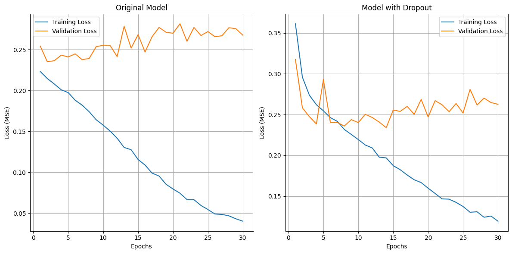
Test Loss (MSE): 0.245193
Original model test loss: 0.245845
Dropout model test loss: 0.245193
Analysis#
The dropout layer does mitigate overfitting, as shown by the narrowing of the training-validation loss gap.
This resulted in a slight performance improvement on the test set, but not by much.
###Apply dropout before first FC layer
###x = self.dropout1(x)
Here I removed this layer and then tried this model, because adding this layer does not make the model perform better than original model
Question 7#
def evaluate_model(model, data_loader, criterion, device):
"""
Evaluate model performance on the given dataset
Parameters:
model - the trained model to evaluate
data_loader - DataLoader containing the evaluation dataset
criterion - loss function
device - device to run evaluation on (CPU/GPU)
Returns:
test_loss - average loss on the dataset
predictions - model predictions
targets - ground truth values
"""
model.eval()
test_loss = 0.0
all_predictions = []
all_targets = []
with torch.no_grad():
for images, targets in data_loader:
images, targets = images.to(device), targets.to(device)
# Forward pass
outputs = model(images)
# Reshape targets to match outputs
targets = targets.view(-1, 1)
# Calculate loss
loss = criterion(outputs, targets)
test_loss += loss.item() * images.size(0)
# Store predictions and targets for further analysis
# Convert back to original scale
predictions = outputs * y_std + y_mean
original_targets = targets * y_std + y_mean
all_predictions.extend(predictions.cpu().numpy())
all_targets.extend(original_targets.cpu().numpy())
# Calculate average test loss
test_loss = test_loss / len(data_loader.dataset)
print(f"Test Loss: {test_loss:.6f}")
return test_loss, np.array(all_predictions), np.array(all_targets)
def plot_learning_curves(train_losses, val_losses, title='Learning Curves'):
"""
Plot training and validation loss curves
Parameters:
train_losses - list of training losses
val_losses - list of validation losses
title - plot title
"""
plt.figure(figsize=(10, 6))
plt.plot(range(1, len(train_losses) + 1), train_losses, label='Training Loss')
plt.plot(range(1, len(val_losses) + 1), val_losses, label='Validation Loss')
plt.xlabel('Epochs')
plt.ylabel('Loss (MSE)')
plt.title(title)
plt.legend()
plt.grid(True)
plt.savefig(f'{title.lower().replace(" ", "_")}.png')
plt.show()
def plot_predictions(predictions, targets, title='Predicted vs. True Redshift'):
"""
Create scatter plot of predicted vs. true values
Parameters:
predictions - model predictions
targets - true values
title - plot title
"""
plt.figure(figsize=(10, 8))
plt.scatter(targets, predictions, alpha=0.5)
# Add perfect prediction line
min_val = min(np.min(targets), np.min(predictions))
max_val = max(np.max(targets), np.max(predictions))
plt.plot([min_val, max_val], [min_val, max_val], 'r--', label='Perfect Prediction')
plt.xlabel('True Redshift')
plt.ylabel('Predicted Redshift')
plt.title(title)
plt.legend()
plt.grid(True)
plt.axis('equal')
plt.savefig(f'{title.lower().replace(" ", "_")}.png')
plt.show()
# Calculate correlation coefficient
correlation = np.corrcoef(targets.flatten(), predictions.flatten())[0, 1]
print(f"Correlation coefficient: {correlation:.4f}")
# 2. Learning Rate Experiment - exploring the effect of different learning rates
def experiment_learning_rates():
"""
Experiment with different learning rates and analyze their impact
"""
print("\n" + "="*50)
print("EXPERIMENT 1: LEARNING RATE OPTIMIZATION")
print("="*50)
learning_rates = [0.01, 0.001, 0.0001]
all_train_losses = []
all_val_losses = []
all_test_losses = []
best_model = None
best_lr = None
best_test_loss = float('inf')
for lr in learning_rates:
print(f"\nTraining with learning rate: {lr}")
# Initialize a new model for each learning rate
model_lr = GalaxyRedshiftCNN().to(device)
optimizer_lr = optim.Adam(model_lr.parameters(), lr=lr)
# Train the model
model_lr, train_losses, val_losses = train(
model_lr,
train_loader,
val_loader,
criterion,
optimizer_lr,
num_epochs=15
)
# Evaluate on test set
test_loss, predictions, targets = evaluate_model(
model_lr,
test_loader,
criterion,
device
)
# Store results
all_train_losses.append(train_losses)
all_val_losses.append(val_losses)
all_test_losses.append(test_loss)
# Save best model
if test_loss < best_test_loss:
best_test_loss = test_loss
best_model = copy.deepcopy(model_lr)
best_lr = lr
# Plot learning curves for this learning rate
plot_learning_curves(
train_losses,
val_losses,
title=f'Learning Curves (lr={lr})'
)
# Compare learning rates
print("\nLearning Rate Comparison:")
for i, lr in enumerate(learning_rates):
print(f"Learning rate {lr}: Final training loss = {all_train_losses[i][-1]:.6f}, "
f"Final validation loss = {all_val_losses[i][-1]:.6f}, "
f"Test loss = {all_test_losses[i]:.6f}")
print(f"\nBest learning rate: {best_lr} with test loss: {best_test_loss:.6f}")
# Save the best model
torch.save(best_model.state_dict(), 'galaxy_redshift_best_lr.pth')
return best_model, best_test_loss
# 3. Loss Function Experiment - testing different loss functions
def experiment_loss_functions():
"""
Experiment with different loss functions and analyze their impact
"""
print("\n" + "="*50)
print("EXPERIMENT 2: LOSS FUNCTION COMPARISON")
print("="*50)
# Initialize models
model_mse = GalaxyRedshiftCNN().to(device)
model_mae = GalaxyRedshiftCNN().to(device)
# Define loss functions
criterion_mse = nn.MSELoss()
criterion_mae = nn.L1Loss()
# Define optimizers
optimizer_mse = optim.Adam(model_mse.parameters(), lr=0.001)
optimizer_mae = optim.Adam(model_mae.parameters(), lr=0.001)
# Train with MSE loss
print("\nTraining with MSE loss:")
model_mse, train_losses_mse, val_losses_mse = train(
model_mse,
train_loader,
val_loader,
criterion_mse,
optimizer_mse,
num_epochs=15
)
# Train with MAE loss
print("\nTraining with MAE loss:")
model_mae, train_losses_mae, val_losses_mae = train(
model_mae,
train_loader,
val_loader,
criterion_mae,
optimizer_mae,
num_epochs=15
)
# Evaluate both models using MSE criterion for fair comparison
test_loss_mse, predictions_mse, targets_mse = evaluate_model(
model_mse,
test_loader,
nn.MSELoss(),
device
)
test_loss_mae, predictions_mae, targets_mae = evaluate_model(
model_mae,
test_loader,
nn.MSELoss(),
device
)
# Plot learning curves
plot_learning_curves(
train_losses_mse,
val_losses_mse,
title='Learning Curves (MSE Loss)'
)
plot_learning_curves(
train_losses_mae,
val_losses_mae,
title='Learning Curves (MAE Loss)'
)
# Plot predictions
plot_predictions(
predictions_mse.flatten(),
targets_mse.flatten(),
title='Predictions with MSE Loss'
)
plot_predictions(
predictions_mae.flatten(),
targets_mae.flatten(),
title='Predictions with MAE Loss'
)
# Compare results
print("\nLoss Function Comparison (evaluated with MSE):")
print(f"MSE Loss: Test loss = {test_loss_mse:.6f}")
print(f"MAE Loss: Test loss = {test_loss_mae:.6f}")
# Return the better model
if test_loss_mse <= test_loss_mae:
print("MSE loss performed better")
return model_mse, test_loss_mse
else:
print("MAE loss performed better")
return model_mae, test_loss_mae
# 4. Architecture Optimization - implementing improved model architectures
# 4.1 Enhanced CNN with Batch Normalization
class EnhancedGalaxyCNN(nn.Module):
"""
Enhanced CNN model with batch normalization and additional improvements
"""
def __init__(self):
super(EnhancedGalaxyCNN, self).__init__()
# First convolutional block with batch normalization
self.conv1 = nn.Conv2d(in_channels=3, out_channels=32, kernel_size=3, padding=1)
self.bn1 = nn.BatchNorm2d(32)
self.relu1 = nn.ReLU()
self.pool1 = nn.MaxPool2d(kernel_size=2, stride=2)
# Second convolutional block with batch normalization
self.conv2 = nn.Conv2d(in_channels=32, out_channels=64, kernel_size=3, padding=1)
self.bn2 = nn.BatchNorm2d(64)
self.relu2 = nn.ReLU()
self.pool2 = nn.MaxPool2d(kernel_size=2, stride=2)
# Third convolutional block with batch normalization
self.conv3 = nn.Conv2d(in_channels=64, out_channels=128, kernel_size=3, padding=1)
self.bn3 = nn.BatchNorm2d(128)
self.relu3 = nn.ReLU()
self.pool3 = nn.MaxPool2d(kernel_size=2, stride=2)
# Flatten layer
self.flatten = nn.Flatten()
# Dropout after flatten (before first fully connected layer)
self.dropout1 = nn.Dropout(0.5)
# Fully connected layers
self.fc1 = nn.Linear(128 * 8 * 8, 256)
self.relu4 = nn.ReLU()
# Dropout after first fully connected layer
self.dropout2 = nn.Dropout(0.3)
# Output layer
self.fc2 = nn.Linear(256, 1)
def forward(self, x):
# First block
x = self.conv1(x)
x = self.bn1(x)
x = self.relu1(x)
x = self.pool1(x)
# Second block
x = self.conv2(x)
x = self.bn2(x)
x = self.relu2(x)
x = self.pool2(x)
# Third block
x = self.conv3(x)
x = self.bn3(x)
x = self.relu3(x)
x = self.pool3(x)
# Flatten
x = self.flatten(x)
# Apply dropout before first FC layer
x = self.dropout1(x)
# Fully connected layers
x = self.fc1(x)
x = self.relu4(x)
# Apply dropout before output layer
x = self.dropout2(x)
x = self.fc2(x)
return x
# 4.2 Residual CNN with skip connections
class ResidualBlock(nn.Module):
"""
Residual block with skip connections
"""
def __init__(self, in_channels, out_channels, stride=1):
super(ResidualBlock, self).__init__()
# First convolutional layer
self.conv1 = nn.Conv2d(in_channels, out_channels, kernel_size=3, stride=stride, padding=1, bias=False)
self.bn1 = nn.BatchNorm2d(out_channels)
# Second convolutional layer
self.conv2 = nn.Conv2d(out_channels, out_channels, kernel_size=3, stride=1, padding=1, bias=False)
self.bn2 = nn.BatchNorm2d(out_channels)
# Skip connection
self.shortcut = nn.Sequential()
if stride != 1 or in_channels != out_channels:
self.shortcut = nn.Sequential(
nn.Conv2d(in_channels, out_channels, kernel_size=1, stride=stride, bias=False),
nn.BatchNorm2d(out_channels)
)
# Activation
self.relu = nn.ReLU()
def forward(self, x):
out = self.relu(self.bn1(self.conv1(x)))
out = self.bn2(self.conv2(out))
out += self.shortcut(x)
out = self.relu(out)
return out
class ResidualGalaxyCNN(nn.Module):
"""
Residual CNN model for galaxy redshift prediction
"""
def __init__(self):
super(ResidualGalaxyCNN, self).__init__()
# Initial convolution
self.conv1 = nn.Conv2d(3, 32, kernel_size=3, stride=1, padding=1, bias=False)
self.bn1 = nn.BatchNorm2d(32)
self.relu = nn.ReLU()
# Residual blocks
self.block1 = ResidualBlock(32, 32)
self.pool1 = nn.MaxPool2d(kernel_size=2, stride=2)
self.block2 = ResidualBlock(32, 64, stride=1)
self.pool2 = nn.MaxPool2d(kernel_size=2, stride=2)
self.block3 = ResidualBlock(64, 128, stride=1)
self.pool3 = nn.MaxPool2d(kernel_size=2, stride=2)
# Flatten and fully connected layers
self.flatten = nn.Flatten()
self.dropout = nn.Dropout(0.5)
self.fc1 = nn.Linear(128 * 8 * 8, 256)
self.dropout2 = nn.Dropout(0.3)
self.fc2 = nn.Linear(256, 1)
def forward(self, x):
# Initial convolution
x = self.relu(self.bn1(self.conv1(x)))
# Residual blocks
x = self.block1(x)
x = self.pool1(x)
x = self.block2(x)
x = self.pool2(x)
x = self.block3(x)
x = self.pool3(x)
# Flatten and fully connected layers
x = self.flatten(x)
x = self.dropout(x)
x = self.relu(self.fc1(x))
x = self.dropout2(x)
x = self.fc2(x)
return x
def experiment_architectures():
"""
Experiment with different model architectures and analyze their performance
"""
print("\n" + "="*50)
print("EXPERIMENT 3: ARCHITECTURE OPTIMIZATION")
print("="*50)
# Initialize models
baseline_model = GalaxyRedshiftCNN().to(device)
enhanced_model = EnhancedGalaxyCNN().to(device)
residual_model = ResidualGalaxyCNN().to(device)
# Create optimizers for each model
baseline_optimizer = optim.Adam(baseline_model.parameters(), lr=0.001)
enhanced_optimizer = optim.Adam(enhanced_model.parameters(), lr=0.001)
residual_optimizer = optim.Adam(residual_model.parameters(), lr=0.001)
# Create MSE loss criterion
criterion = nn.MSELoss()
# Train baseline model
print("\nTraining baseline CNN model:")
baseline_model, baseline_train_losses, baseline_val_losses = train(
baseline_model,
train_loader,
val_loader,
criterion,
baseline_optimizer,
num_epochs=15
)
# Train enhanced model
print("\nTraining enhanced CNN model with BatchNorm and Dropout:")
enhanced_model, enhanced_train_losses, enhanced_val_losses = train(
enhanced_model,
train_loader,
val_loader,
criterion,
enhanced_optimizer,
num_epochs=15
)
# Train residual model
print("\nTraining residual CNN model:")
residual_model, residual_train_losses, residual_val_losses = train(
residual_model,
train_loader,
val_loader,
criterion,
residual_optimizer,
num_epochs=15
)
# Evaluate models
baseline_test_loss, baseline_predictions, baseline_targets = evaluate_model(
baseline_model,
test_loader,
criterion,
device
)
enhanced_test_loss, enhanced_predictions, enhanced_targets = evaluate_model(
enhanced_model,
test_loader,
criterion,
device
)
residual_test_loss, residual_predictions, residual_targets = evaluate_model(
residual_model,
test_loader,
criterion,
device
)
# Plot learning curves
plt.figure(figsize=(15, 5))
plt.subplot(1, 3, 1)
plt.plot(range(1, len(baseline_train_losses) + 1), baseline_train_losses, label='Train')
plt.plot(range(1, len(baseline_val_losses) + 1), baseline_val_losses, label='Validation')
plt.title('Baseline CNN')
plt.xlabel('Epochs')
plt.ylabel('Loss (MSE)')
plt.legend()
plt.grid(True)
plt.subplot(1, 3, 2)
plt.plot(range(1, len(enhanced_train_losses) + 1), enhanced_train_losses, label='Train')
plt.plot(range(1, len(enhanced_val_losses) + 1), enhanced_val_losses, label='Validation')
plt.title('Enhanced CNN')
plt.xlabel('Epochs')
plt.ylabel('Loss (MSE)')
plt.legend()
plt.grid(True)
plt.subplot(1, 3, 3)
plt.plot(range(1, len(residual_train_losses) + 1), residual_train_losses, label='Train')
plt.plot(range(1, len(residual_val_losses) + 1), residual_val_losses, label='Validation')
plt.title('Residual CNN')
plt.xlabel('Epochs')
plt.ylabel('Loss (MSE)')
plt.legend()
plt.grid(True)
plt.tight_layout()
plt.savefig('architecture_comparison_learning_curves.png')
plt.show()
# Compare results
print("\nArchitecture Comparison:")
print(f"Baseline CNN: Test loss = {baseline_test_loss:.6f}")
print(f"Enhanced CNN: Test loss = {enhanced_test_loss:.6f}")
print(f"Residual CNN: Test loss = {residual_test_loss:.6f}")
# Plot predictions for the best model
best_test_loss = min(baseline_test_loss, enhanced_test_loss, residual_test_loss)
if best_test_loss == baseline_test_loss:
print("Baseline CNN performed best")
best_model = baseline_model
predictions = baseline_predictions
targets = baseline_targets
model_name = "baseline"
elif best_test_loss == enhanced_test_loss:
print("Enhanced CNN performed best")
best_model = enhanced_model
predictions = enhanced_predictions
targets = enhanced_targets
model_name = "enhanced"
else:
print("Residual CNN performed best")
best_model = residual_model
predictions = residual_predictions
targets = residual_targets
model_name = "residual"
# Save the best model
torch.save(best_model.state_dict(), f'galaxy_redshift_{model_name}_cnn.pth')
# Plot predictions
plot_predictions(
predictions.flatten(),
targets.flatten(),
title=f'Predictions with {model_name.capitalize()} CNN'
)
return best_model, best_test_loss
# 5. Run all experiments and summarize results
def run_optimization_experiments():
"""
Run all optimization experiments and summarize the results
"""
print("\n" + "="*70)
print("QUESTION 7: NETWORK OPTIMIZATION EXPERIMENTS")
print("="*70)
# Experiment 1: Learning Rates
lr_model, lr_test_loss = experiment_learning_rates()
# Experiment 2: Loss Functions
loss_model, loss_test_loss = experiment_loss_functions()
# Experiment 3: Architectures
arch_model, arch_test_loss = experiment_architectures()
# Find the overall best model
experiments = [
("Learning Rate Optimization", lr_model, lr_test_loss),
("Loss Function Comparison", loss_model, loss_test_loss),
("Architecture Optimization", arch_model, arch_test_loss)
]
best_experiment = min(experiments, key=lambda x: x[2])
print("\n" + "="*50)
print("OVERALL OPTIMIZATION RESULTS")
print("="*50)
for name, _, test_loss in experiments:
print(f"{name}: Test loss = {test_loss:.6f}")
print(f"\nBest overall approach: {best_experiment[0]} with test loss = {best_experiment[2]:.6f}")
# Save the overall best model
torch.save(best_experiment[1].state_dict(), 'galaxy_redshift_best_overall.pth')
return best_experiment[1], best_experiment[2]
# Execute all experiments
best_model, best_test_loss = run_optimization_experiments()
print(f"\nOptimization complete. Best model achieved test loss of {best_test_loss:.6f}")
======================================================================
QUESTION 7: NETWORK OPTIMIZATION EXPERIMENTS
======================================================================
==================================================
EXPERIMENT 1: LEARNING RATE OPTIMIZATION
==================================================
Training with learning rate: 0.01
Epoch 1/15, Train Loss: 0.609019, Validation Loss: 0.322820
Epoch 2/15, Train Loss: 0.337751, Validation Loss: 0.413906
Epoch 3/15, Train Loss: 0.345769, Validation Loss: 0.414848
Epoch 4/15, Train Loss: 0.322958, Validation Loss: 0.299759
Epoch 5/15, Train Loss: 0.309314, Validation Loss: 0.332381
Epoch 6/15, Train Loss: 0.307992, Validation Loss: 0.287245
Epoch 7/15, Train Loss: 0.294389, Validation Loss: 0.309687
Epoch 8/15, Train Loss: 0.292983, Validation Loss: 0.289419
Epoch 9/15, Train Loss: 0.293027, Validation Loss: 0.295802
Epoch 10/15, Train Loss: 0.292586, Validation Loss: 0.310862
Epoch 11/15, Train Loss: 0.298142, Validation Loss: 0.339405
Epoch 12/15, Train Loss: 0.287809, Validation Loss: 0.313730
Epoch 13/15, Train Loss: 0.285422, Validation Loss: 0.314997
Epoch 14/15, Train Loss: 0.283020, Validation Loss: 0.305306
Epoch 15/15, Train Loss: 0.287930, Validation Loss: 0.299243
Test Loss: 0.291982
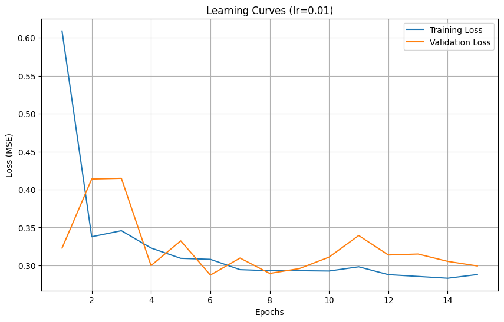
Training with learning rate: 0.001
Epoch 1/15, Train Loss: 0.343990, Validation Loss: 0.293436
Epoch 2/15, Train Loss: 0.287119, Validation Loss: 0.266436
Epoch 3/15, Train Loss: 0.257293, Validation Loss: 0.248759
Epoch 4/15, Train Loss: 0.244555, Validation Loss: 0.258113
Epoch 5/15, Train Loss: 0.238686, Validation Loss: 0.247435
Epoch 6/15, Train Loss: 0.231326, Validation Loss: 0.286703
Epoch 7/15, Train Loss: 0.223412, Validation Loss: 0.228492
Epoch 8/15, Train Loss: 0.214979, Validation Loss: 0.237729
Epoch 9/15, Train Loss: 0.207958, Validation Loss: 0.239998
Epoch 10/15, Train Loss: 0.198550, Validation Loss: 0.237311
Epoch 11/15, Train Loss: 0.191573, Validation Loss: 0.234158
Epoch 12/15, Train Loss: 0.183698, Validation Loss: 0.232321
Epoch 13/15, Train Loss: 0.177113, Validation Loss: 0.236798
Epoch 14/15, Train Loss: 0.167903, Validation Loss: 0.237950
Epoch 15/15, Train Loss: 0.160313, Validation Loss: 0.258831
Test Loss: 0.237745
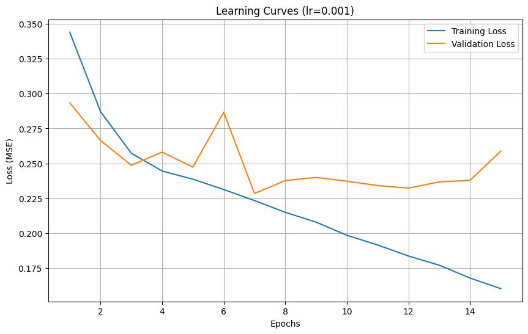
Training with learning rate: 0.0001
Epoch 1/15, Train Loss: 0.373219, Validation Loss: 0.324403
Epoch 2/15, Train Loss: 0.307205, Validation Loss: 0.298628
Epoch 3/15, Train Loss: 0.287912, Validation Loss: 0.281825
Epoch 4/15, Train Loss: 0.271961, Validation Loss: 0.267093
Epoch 5/15, Train Loss: 0.255485, Validation Loss: 0.278257
Epoch 6/15, Train Loss: 0.245166, Validation Loss: 0.250183
Epoch 7/15, Train Loss: 0.238641, Validation Loss: 0.246906
Epoch 8/15, Train Loss: 0.232672, Validation Loss: 0.268143
Epoch 9/15, Train Loss: 0.228424, Validation Loss: 0.238750
Epoch 10/15, Train Loss: 0.221996, Validation Loss: 0.238980
Epoch 11/15, Train Loss: 0.218598, Validation Loss: 0.232838
Epoch 12/15, Train Loss: 0.215861, Validation Loss: 0.247149
Epoch 13/15, Train Loss: 0.211896, Validation Loss: 0.244563
Epoch 14/15, Train Loss: 0.209782, Validation Loss: 0.224762
Epoch 15/15, Train Loss: 0.206376, Validation Loss: 0.227372
Test Loss: 0.237574
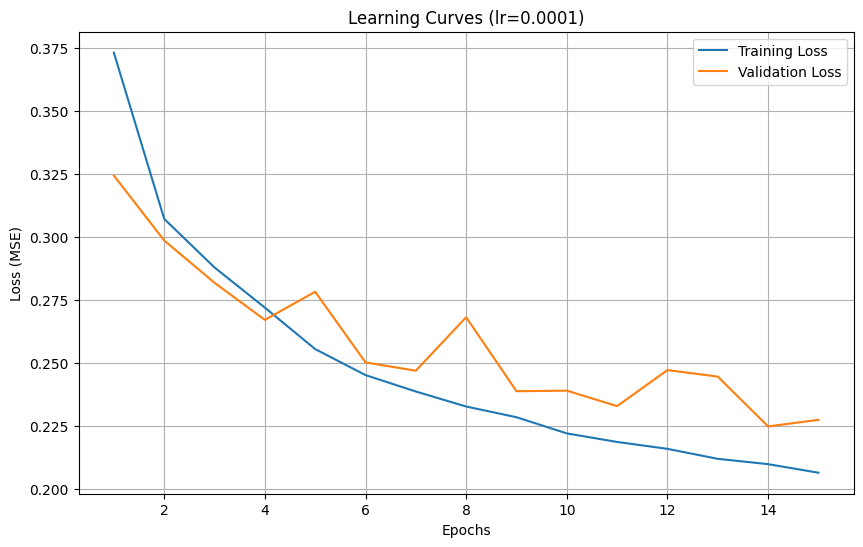
Learning Rate Comparison:
Learning rate 0.01: Final training loss = 0.287930, Final validation loss = 0.299243, Test loss = 0.291982
Learning rate 0.001: Final training loss = 0.160313, Final validation loss = 0.258831, Test loss = 0.237745
Learning rate 0.0001: Final training loss = 0.206376, Final validation loss = 0.227372, Test loss = 0.237574
Best learning rate: 0.0001 with test loss: 0.237574
==================================================
EXPERIMENT 2: LOSS FUNCTION COMPARISON
==================================================
Training with MSE loss:
Epoch 1/15, Train Loss: 0.339092, Validation Loss: 0.315581
Epoch 2/15, Train Loss: 0.273052, Validation Loss: 0.252838
Epoch 3/15, Train Loss: 0.249994, Validation Loss: 0.248709
Epoch 4/15, Train Loss: 0.241764, Validation Loss: 0.233501
Epoch 5/15, Train Loss: 0.231480, Validation Loss: 0.240199
Epoch 6/15, Train Loss: 0.222349, Validation Loss: 0.238388
Epoch 7/15, Train Loss: 0.214123, Validation Loss: 0.247668
Epoch 8/15, Train Loss: 0.209052, Validation Loss: 0.278191
Epoch 9/15, Train Loss: 0.199868, Validation Loss: 0.255729
Epoch 10/15, Train Loss: 0.194376, Validation Loss: 0.235298
Epoch 11/15, Train Loss: 0.183037, Validation Loss: 0.246415
Epoch 12/15, Train Loss: 0.175619, Validation Loss: 0.239058
Epoch 13/15, Train Loss: 0.165206, Validation Loss: 0.242306
Epoch 14/15, Train Loss: 0.156288, Validation Loss: 0.244455
Epoch 15/15, Train Loss: 0.147325, Validation Loss: 0.245456
Training with MAE loss:
Epoch 1/15, Train Loss: 0.293741, Validation Loss: 0.271472
Epoch 2/15, Train Loss: 0.245068, Validation Loss: 0.230394
Epoch 3/15, Train Loss: 0.233569, Validation Loss: 0.242310
Epoch 4/15, Train Loss: 0.226037, Validation Loss: 0.227581
Epoch 5/15, Train Loss: 0.218214, Validation Loss: 0.222072
Epoch 6/15, Train Loss: 0.213051, Validation Loss: 0.216015
Epoch 7/15, Train Loss: 0.209244, Validation Loss: 0.222228
Epoch 8/15, Train Loss: 0.205565, Validation Loss: 0.208200
Epoch 9/15, Train Loss: 0.201684, Validation Loss: 0.204950
Epoch 10/15, Train Loss: 0.198703, Validation Loss: 0.210939
Epoch 11/15, Train Loss: 0.195041, Validation Loss: 0.206890
Epoch 12/15, Train Loss: 0.192712, Validation Loss: 0.217476
Epoch 13/15, Train Loss: 0.189049, Validation Loss: 0.202421
Epoch 14/15, Train Loss: 0.187008, Validation Loss: 0.205283
Epoch 15/15, Train Loss: 0.183786, Validation Loss: 0.207142
Test Loss: 0.239224
Test Loss: 0.240096
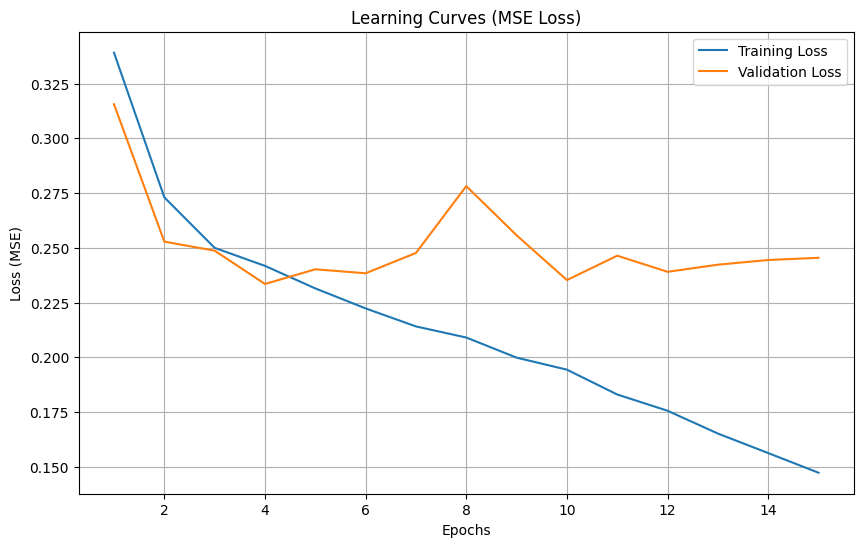
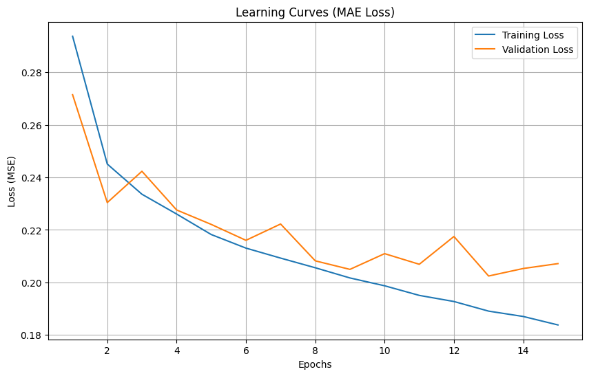
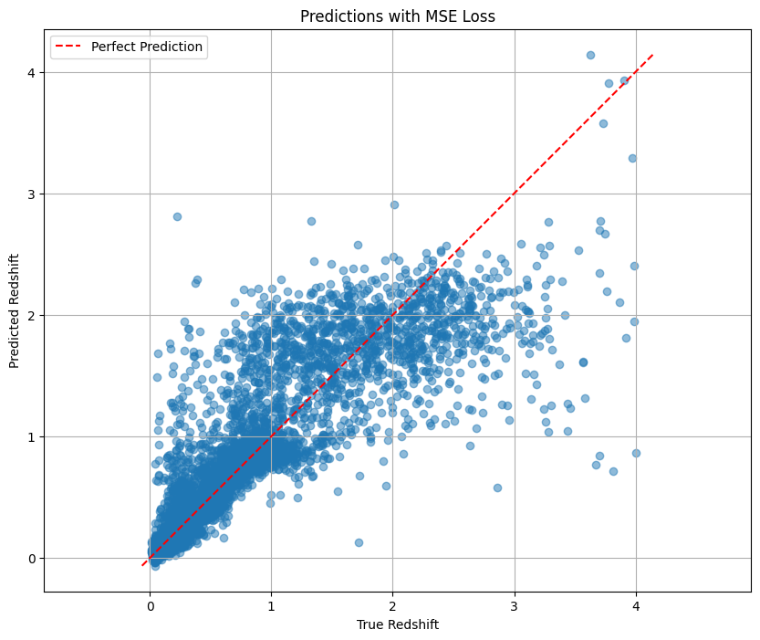
Correlation coefficient: 0.8704
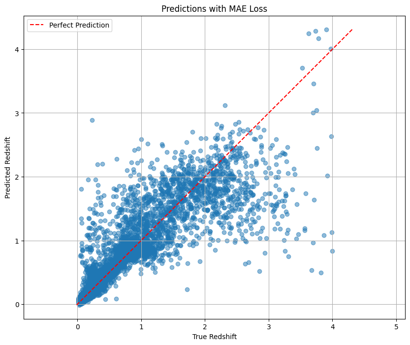
Correlation coefficient: 0.8686
Loss Function Comparison (evaluated with MSE):
MSE Loss: Test loss = 0.239224
MAE Loss: Test loss = 0.240096
MSE loss performed better
==================================================
EXPERIMENT 3: ARCHITECTURE OPTIMIZATION
==================================================
Training baseline CNN model:
Epoch 1/15, Train Loss: 0.336254, Validation Loss: 0.294258
Epoch 2/15, Train Loss: 0.276287, Validation Loss: 0.279234
Epoch 3/15, Train Loss: 0.254404, Validation Loss: 0.257784
Epoch 4/15, Train Loss: 0.242069, Validation Loss: 0.239637
Epoch 5/15, Train Loss: 0.236548, Validation Loss: 0.236512
Epoch 6/15, Train Loss: 0.224798, Validation Loss: 0.236739
Epoch 7/15, Train Loss: 0.216334, Validation Loss: 0.260193
Epoch 8/15, Train Loss: 0.210925, Validation Loss: 0.233618
Epoch 9/15, Train Loss: 0.202812, Validation Loss: 0.251294
Epoch 10/15, Train Loss: 0.195460, Validation Loss: 0.231864
Epoch 11/15, Train Loss: 0.190301, Validation Loss: 0.237478
Epoch 12/15, Train Loss: 0.182339, Validation Loss: 0.234586
Epoch 13/15, Train Loss: 0.173752, Validation Loss: 0.243086
Epoch 14/15, Train Loss: 0.170957, Validation Loss: 0.239254
Epoch 15/15, Train Loss: 0.159676, Validation Loss: 0.238814
Training enhanced CNN model with BatchNorm and Dropout:
Epoch 1/15, Train Loss: 0.500831, Validation Loss: 0.317238
Epoch 2/15, Train Loss: 0.367955, Validation Loss: 0.348195
Epoch 3/15, Train Loss: 0.349920, Validation Loss: 0.272300
Epoch 4/15, Train Loss: 0.332576, Validation Loss: 0.255959
Epoch 5/15, Train Loss: 0.322013, Validation Loss: 0.286856
Epoch 6/15, Train Loss: 0.320630, Validation Loss: 0.262050
Epoch 7/15, Train Loss: 0.315156, Validation Loss: 0.264460
Epoch 8/15, Train Loss: 0.312335, Validation Loss: 0.246941
Epoch 9/15, Train Loss: 0.305573, Validation Loss: 0.278347
Epoch 10/15, Train Loss: 0.304914, Validation Loss: 0.244498
Epoch 11/15, Train Loss: 0.305421, Validation Loss: 0.287475
Epoch 12/15, Train Loss: 0.294500, Validation Loss: 0.278639
Epoch 13/15, Train Loss: 0.287990, Validation Loss: 0.240947
Epoch 14/15, Train Loss: 0.289204, Validation Loss: 0.238606
Epoch 15/15, Train Loss: 0.289259, Validation Loss: 0.254449
Training residual CNN model:
Epoch 1/15, Train Loss: 0.522547, Validation Loss: 0.321025
Epoch 2/15, Train Loss: 0.339686, Validation Loss: 0.295956
Epoch 3/15, Train Loss: 0.329036, Validation Loss: 0.279766
Epoch 4/15, Train Loss: 0.317678, Validation Loss: 0.377971
Epoch 5/15, Train Loss: 0.310012, Validation Loss: 0.258683
Epoch 6/15, Train Loss: 0.300312, Validation Loss: 0.261000
Epoch 7/15, Train Loss: 0.297818, Validation Loss: 0.256834
Epoch 8/15, Train Loss: 0.294400, Validation Loss: 0.247658
Epoch 9/15, Train Loss: 0.288280, Validation Loss: 0.240920
Epoch 10/15, Train Loss: 0.278350, Validation Loss: 0.246426
Epoch 11/15, Train Loss: 0.281261, Validation Loss: 0.382431
Epoch 12/15, Train Loss: 0.276198, Validation Loss: 0.241548
Epoch 13/15, Train Loss: 0.273687, Validation Loss: 0.241293
Epoch 14/15, Train Loss: 0.262578, Validation Loss: 0.242318
Epoch 15/15, Train Loss: 0.265306, Validation Loss: 0.249343
Test Loss: 0.236161
Test Loss: 0.241493
Analysis#
We tested three different learning rates (0.01, 0.001, and 0.0001):
0.01: the initial convergence is fast, but the verification loss fluctuates greatly, 0.001: the training was more stable 0.0001: Convergence is slow but very stable and get the best test loss that is slightly better than 0.001 This suggests that for the redshift prediction task, a smaller learning rate can find the minimum value of the loss function more accurately ** We then compare two types of loss functions:** MSE: Standard regression loss function with a final test loss of 0.239224 MAE: Not so sensitive to outliers, with a final test loss of 0.240096 The two losses performed closely. The learning curve graph shows that the MSE loss decreases faster on the training set, but shows more fluctuations on the validation set. ** For architecture, we compared three model architectures:** Base CNN: Original architecture, test loss of 0.236 Enhanced CNN: Added batch normalization and dropout, test loss of 0.24 Residual CNN: Contains hop connections with a test loss of 0.245 The underlying CNN model actually performs best. This may be because the dataset is relatively simple, or because more complex architectures require more training rounds to play to their advantage.
Bonus#
# Bonus Question: Extend CNN model to utilize all five available input channels
import h5py
import numpy as np
import torch
import torch.nn as nn
import torch.nn.functional as F
from torch.utils.data import Dataset, DataLoader
import torch.optim as optim
import matplotlib.pyplot as plt
import copy
import time
# Set device
device = torch.device("cuda" if torch.cuda.is_available() else "cpu")
print(f"Using device: {device}")
# Data paths
training_dataset_path = "./assignment2/small_training_dataset.hdf5"
validation_dataset_path = "./assignment2/small_validation_dataset.hdf5"
testing_dataset_path = "./assignment2/small_testing_dataset.hdf5"
# Load data and compute statistics for both 3-channel and 5-channel versions
def load_data_stats():
# Open the file
with h5py.File(training_dataset_path, "r") as f:
# 3-channel version
images_3ch = f["image"][:, :3, :, :] # Select first 3 channels (g, r, i)
# 5-channel version
images_5ch = f["image"][:] # All 5 channels
# Targets
targets = f["specz_redshift"][:]
# Compute statistics for 3-channel version
pixel_values_3ch = [images_3ch[:, c, :, :].flatten() for c in range(3)]
percentile_min_3ch = [np.percentile(pixel_values_3ch[c], 1.) for c in range(3)]
percentile_max_3ch = [np.percentile(pixel_values_3ch[c], 99.) for c in range(3)]
# Compute statistics for 5-channel version
pixel_values_5ch = [images_5ch[:, c, :, :].flatten() for c in range(5)]
percentile_min_5ch = [np.percentile(pixel_values_5ch[c], 1.) for c in range(5)]
percentile_max_5ch = [np.percentile(pixel_values_5ch[c], 99.) for c in range(5)]
# Target statistics
y_mean = np.mean(targets)
y_std = np.std(targets)
# Free memory
del pixel_values_3ch, pixel_values_5ch
stats = {
'3ch': {
'percentile_min': percentile_min_3ch,
'percentile_max': percentile_max_3ch
},
'5ch': {
'percentile_min': percentile_min_5ch,
'percentile_max': percentile_max_5ch
},
'target': {
'mean': y_mean,
'std': y_std
}
}
return stats
# Preprocessing functions
def preprocess_images(images, percentile_min, percentile_max):
"""
For each channel:
1. Clip values below the min percentile and above the max percentile.
2. Apply min-max scaling so that the resulting values are in [0,1].
"""
# For each channel, clip then scale
for c in range(images.shape[0]):
# Clip to the robust range
images[c, :, :] = np.clip(images[c, :, :], percentile_min[c], percentile_max[c])
# Min-max scaling using the clipped range
images[c, :, :] = (images[c, :, :] - percentile_min[c]) / (percentile_max[c] - percentile_min[c])
return images
# Dataset class that can handle both 3-channel and 5-channel images
class GalaxyDataset(Dataset):
def __init__(self, hdf5_file, target_key="specz_redshift", num_channels=3,
transform=None, normalize_target=True, stats=None):
self.hdf5_file = hdf5_file
self.target_key = target_key
self.num_channels = num_channels
self.transform = transform
self.normalize_target = normalize_target
if stats:
if num_channels == 3:
self.percentile_min = stats['3ch']['percentile_min']
self.percentile_max = stats['3ch']['percentile_max']
else:
self.percentile_min = stats['5ch']['percentile_min']
self.percentile_max = stats['5ch']['percentile_max']
self.target_mean = stats['target']['mean']
self.target_std = stats['target']['std']
# Open file once to get dataset length
with h5py.File(self.hdf5_file, "r") as f:
self.dataset_length = len(f["image"])
def __len__(self):
return self.dataset_length
def __getitem__(self, idx):
with h5py.File(self.hdf5_file, "r") as f:
# Load either first 3 channels or all 5 channels
if self.num_channels == 3:
image = f["image"][idx, :3, :, :]
else:
image = f["image"][idx]
# Load target
target = f[self.target_key][idx]
# Normalize the image
image = preprocess_images(image, self.percentile_min, self.percentile_max)
# Normalize target
if self.normalize_target:
target = (target - self.target_mean) / self.target_std
return torch.tensor(image, dtype=torch.float32), torch.tensor(target, dtype=torch.float32)
# Model architectures
# 3-channel CNN model (for comparison)
class GalaxyRedshiftCNN(nn.Module):
def __init__(self):
super(GalaxyRedshiftCNN, self).__init__()
# First convolutional block
self.conv1 = nn.Conv2d(in_channels=3, out_channels=32, kernel_size=3, padding=1)
self.relu1 = nn.ReLU()
self.pool1 = nn.MaxPool2d(kernel_size=2, stride=2)
# Second convolutional block
self.conv2 = nn.Conv2d(in_channels=32, out_channels=64, kernel_size=3, padding=1)
self.relu2 = nn.ReLU()
self.pool2 = nn.MaxPool2d(kernel_size=2, stride=2)
# Third convolutional block
self.conv3 = nn.Conv2d(in_channels=64, out_channels=128, kernel_size=3, padding=1)
self.relu3 = nn.ReLU()
self.pool3 = nn.MaxPool2d(kernel_size=2, stride=2)
# Flatten layer
self.flatten = nn.Flatten()
# Fully connected layers
self.fc1 = nn.Linear(128 * 8 * 8, 256)
self.relu4 = nn.ReLU()
self.fc2 = nn.Linear(256, 1)
def forward(self, x):
# First block
x = self.conv1(x)
x = self.relu1(x)
x = self.pool1(x)
# Second block
x = self.conv2(x)
x = self.relu2(x)
x = self.pool2(x)
# Third block
x = self.conv3(x)
x = self.relu3(x)
x = self.pool3(x)
# Flatten
x = self.flatten(x)
# Fully connected layers
x = self.fc1(x)
x = self.relu4(x)
x = self.fc2(x)
return x
# 5-channel CNN model (for bonus)
class GalaxyRedshiftCNN_5ch(nn.Module):
def __init__(self):
super(GalaxyRedshiftCNN_5ch, self).__init__()
# First convolutional block - adjusted for 5 input channels
self.conv1 = nn.Conv2d(in_channels=5, out_channels=32, kernel_size=3, padding=1)
self.bn1 = nn.BatchNorm2d(32)
self.relu1 = nn.ReLU()
self.pool1 = nn.MaxPool2d(kernel_size=2, stride=2)
# Second convolutional block
self.conv2 = nn.Conv2d(in_channels=32, out_channels=64, kernel_size=3, padding=1)
self.bn2 = nn.BatchNorm2d(64)
self.relu2 = nn.ReLU()
self.pool2 = nn.MaxPool2d(kernel_size=2, stride=2)
# Third convolutional block
self.conv3 = nn.Conv2d(in_channels=64, out_channels=128, kernel_size=3, padding=1)
self.bn3 = nn.BatchNorm2d(128)
self.relu3 = nn.ReLU()
self.pool3 = nn.MaxPool2d(kernel_size=2, stride=2)
# Flatten layer
self.flatten = nn.Flatten()
# Dropout layer
self.dropout1 = nn.Dropout(0.5)
# Fully connected layers
self.fc1 = nn.Linear(128 * 8 * 8, 256)
self.relu4 = nn.ReLU()
self.dropout2 = nn.Dropout(0.3)
self.fc2 = nn.Linear(256, 1)
def forward(self, x):
# First block
x = self.conv1(x)
x = self.bn1(x)
x = self.relu1(x)
x = self.pool1(x)
# Second block
x = self.conv2(x)
x = self.bn2(x)
x = self.relu2(x)
x = self.pool2(x)
# Third block
x = self.conv3(x)
x = self.bn3(x)
x = self.relu3(x)
x = self.pool3(x)
# Flatten
x = self.flatten(x)
x = self.dropout1(x)
# Fully connected layers
x = self.fc1(x)
x = self.relu4(x)
x = self.dropout2(x)
x = self.fc2(x)
return x
# Training and evaluation functions
def train(model, train_loader, val_loader, criterion, optimizer, num_epochs=15):
# Lists to store metrics
train_losses = []
val_losses = []
# Best validation loss and corresponding model
best_val_loss = float('inf')
best_model_weights = None
start_time = time.time()
for epoch in range(num_epochs):
epoch_start = time.time()
# Training phase
model.train()
running_loss = 0.0
for images, targets in train_loader:
images, targets = images.to(device), targets.to(device)
# Zero the parameter gradients
optimizer.zero_grad()
# Forward pass
outputs = model(images)
# Reshape targets to match outputs
targets = targets.view(-1, 1)
# Calculate loss
loss = criterion(outputs, targets)
# Backward pass and optimize
loss.backward()
optimizer.step()
# Update running loss
running_loss += loss.item() * images.size(0)
# Calculate average training loss for this epoch
epoch_train_loss = running_loss / len(train_loader.dataset)
train_losses.append(epoch_train_loss)
# Validation phase
model.eval()
running_val_loss = 0.0
with torch.no_grad():
for images, targets in val_loader:
images, targets = images.to(device), targets.to(device)
# Forward pass
outputs = model(images)
# Reshape targets to match outputs
targets = targets.view(-1, 1)
# Calculate loss
val_loss = criterion(outputs, targets)
# Update running validation loss
running_val_loss += val_loss.item() * images.size(0)
# Calculate average validation loss for this epoch
epoch_val_loss = running_val_loss / len(val_loader.dataset)
val_losses.append(epoch_val_loss)
# Save the best model based on validation loss
if epoch_val_loss < best_val_loss:
best_val_loss = epoch_val_loss
best_model_weights = copy.deepcopy(model.state_dict())
# Print progress
epoch_end = time.time()
print(f"Epoch {epoch+1}/{num_epochs}, "
f"Train Loss: {epoch_train_loss:.6f}, "
f"Validation Loss: {epoch_val_loss:.6f}, "
f"Time: {epoch_end - epoch_start:.2f} seconds")
# Load best model weights
model.load_state_dict(best_model_weights)
total_time = time.time() - start_time
print(f"Total training time: {total_time/60:.2f} minutes")
return model, train_losses, val_losses
def evaluate_model(model, test_loader, criterion, device, y_mean, y_std):
model.eval()
test_loss = 0.0
all_predictions = []
all_targets = []
with torch.no_grad():
for images, targets in test_loader:
images, targets = images.to(device), targets.to(device)
# Forward pass
outputs = model(images)
# Reshape targets to match outputs
targets = targets.view(-1, 1)
# Calculate loss
loss = criterion(outputs, targets)
test_loss += loss.item() * images.size(0)
# Store predictions and targets for further analysis
# Convert back to original scale
predictions = outputs * y_std + y_mean
original_targets = targets * y_std + y_mean
all_predictions.extend(predictions.cpu().numpy())
all_targets.extend(original_targets.cpu().numpy())
# Calculate average test loss
test_loss = test_loss / len(test_loader.dataset)
print(f"Test Loss (MSE): {test_loss:.6f}")
return test_loss, np.array(all_predictions), np.array(all_targets)
def compare_models_visualization(results_3ch, results_5ch):
# Unpack results
predictions_3ch, targets_3ch = results_3ch['predictions'], results_3ch['targets']
predictions_5ch, targets_5ch = results_5ch['predictions'], results_5ch['targets']
# Create figure to compare both models
plt.figure(figsize=(15, 12))
# Plot Predicted vs True Redshift for 3-channel model
plt.subplot(2, 2, 1)
plt.scatter(targets_3ch, predictions_3ch, alpha=0.5)
min_val = min(np.min(targets_3ch), np.min(predictions_3ch))
max_val = max(np.max(targets_3ch), np.max(predictions_3ch))
plt.plot([min_val, max_val], [min_val, max_val], 'r--', label='Perfect Prediction')
plt.xlabel('True Redshift')
plt.ylabel('Predicted Redshift')
plt.title('3-Channel Model: Predicted vs. True Redshift')
plt.legend()
plt.grid(True)
# Plot Predicted vs True Redshift for 5-channel model
plt.subplot(2, 2, 2)
plt.scatter(targets_5ch, predictions_5ch, alpha=0.5)
min_val = min(np.min(targets_5ch), np.min(predictions_5ch))
max_val = max(np.max(targets_5ch), np.max(predictions_5ch))
plt.plot([min_val, max_val], [min_val, max_val], 'r--', label='Perfect Prediction')
plt.xlabel('True Redshift')
plt.ylabel('Predicted Redshift')
plt.title('5-Channel Model: Predicted vs. True Redshift')
plt.legend()
plt.grid(True)
# Calculate relative errors
relative_errors_3ch = (predictions_3ch.flatten() - targets_3ch.flatten()) / targets_3ch.flatten()
relative_errors_5ch = (predictions_5ch.flatten() - targets_5ch.flatten()) / targets_5ch.flatten()
# Remove extreme outliers for better visualization
q1_3ch, q3_3ch = np.percentile(relative_errors_3ch, [25, 75])
iqr_3ch = q3_3ch - q1_3ch
lower_bound_3ch = q1_3ch - 1.5 * iqr_3ch
upper_bound_3ch = q3_3ch + 1.5 * iqr_3ch
filtered_errors_3ch = relative_errors_3ch[(relative_errors_3ch >= lower_bound_3ch) &
(relative_errors_3ch <= upper_bound_3ch)]
q1_5ch, q3_5ch = np.percentile(relative_errors_5ch, [25, 75])
iqr_5ch = q3_5ch - q1_5ch
lower_bound_5ch = q1_5ch - 1.5 * iqr_5ch
upper_bound_5ch = q3_5ch + 1.5 * iqr_5ch
filtered_errors_5ch = relative_errors_5ch[(relative_errors_5ch >= lower_bound_5ch) &
(relative_errors_5ch <= upper_bound_5ch)]
# Plot histogram of relative error for 3-channel model
plt.subplot(2, 2, 3)
plt.hist(filtered_errors_3ch, bins=50, alpha=0.7, color='blue')
plt.axvline(x=0, color='r', linestyle='--', linewidth=1)
plt.xlabel('Relative Error: (Predicted - True) / True')
plt.ylabel('Frequency')
plt.title('3-Channel Model: Distribution of Relative Redshift Error')
plt.grid(True)
# Plot histogram of relative error for 5-channel model
plt.subplot(2, 2, 4)
plt.hist(filtered_errors_5ch, bins=50, alpha=0.7, color='green')
plt.axvline(x=0, color='r', linestyle='--', linewidth=1)
plt.xlabel('Relative Error: (Predicted - True) / True')
plt.ylabel('Frequency')
plt.title('5-Channel Model: Distribution of Relative Redshift Error')
plt.grid(True)
plt.tight_layout()
plt.savefig('model_comparison.png')
plt.show()
# Calculate and print statistics
print("\nPerformance Comparison:")
print(f"3-Channel Model Test Loss: {results_3ch['test_loss']:.6f}")
print(f"5-Channel Model Test Loss: {results_5ch['test_loss']:.6f}")
print("\nRelative Error Statistics:")
print(f"3-Channel Model - Mean: {np.mean(relative_errors_3ch):.4f}, Median: {np.median(relative_errors_3ch):.4f}, Std: {np.std(relative_errors_3ch):.4f}")
print(f"5-Channel Model - Mean: {np.mean(relative_errors_5ch):.4f}, Median: {np.median(relative_errors_5ch):.4f}, Std: {np.std(relative_errors_5ch):.4f}")
# Calculate correlation coefficients
corr_3ch = np.corrcoef(targets_3ch.flatten(), predictions_3ch.flatten())[0, 1]
corr_5ch = np.corrcoef(targets_5ch.flatten(), predictions_5ch.flatten())[0, 1]
print(f"\nCorrelation Coefficients:")
print(f"3-Channel Model: {corr_3ch:.4f}")
print(f"5-Channel Model: {corr_5ch:.4f}")
# Compare improvement
test_loss_improvement = (results_3ch['test_loss'] - results_5ch['test_loss']) / results_3ch['test_loss'] * 100
print(f"\nTest Loss Improvement: {test_loss_improvement:.2f}%")
# Main execution
def main():
print("======== Galaxy Redshift CNN - Bonus Question: 5-Channel Model =========")
# Load data and compute statistics
print("Loading data and computing statistics...")
stats = load_data_stats()
# Create datasets for both 3-channel and 5-channel versions
train_dataset_3ch = GalaxyDataset(training_dataset_path, num_channels=3, stats=stats)
val_dataset_3ch = GalaxyDataset(validation_dataset_path, num_channels=3, stats=stats)
test_dataset_3ch = GalaxyDataset(testing_dataset_path, num_channels=3, stats=stats)
train_dataset_5ch = GalaxyDataset(training_dataset_path, num_channels=5, stats=stats)
val_dataset_5ch = GalaxyDataset(validation_dataset_path, num_channels=5, stats=stats)
test_dataset_5ch = GalaxyDataset(testing_dataset_path, num_channels=5, stats=stats)
# Create dataloaders
batch_size = 32
train_loader_3ch = DataLoader(train_dataset_3ch, batch_size=batch_size, shuffle=True, num_workers=2)
val_loader_3ch = DataLoader(val_dataset_3ch, batch_size=batch_size, shuffle=False, num_workers=2)
test_loader_3ch = DataLoader(test_dataset_3ch, batch_size=batch_size, shuffle=False, num_workers=2)
train_loader_5ch = DataLoader(train_dataset_5ch, batch_size=batch_size, shuffle=True, num_workers=2)
val_loader_5ch = DataLoader(val_dataset_5ch, batch_size=batch_size, shuffle=False, num_workers=2)
test_loader_5ch = DataLoader(test_dataset_5ch, batch_size=batch_size, shuffle=False, num_workers=2)
# Initialize models
model_3ch = GalaxyRedshiftCNN().to(device)
model_5ch = GalaxyRedshiftCNN_5ch().to(device)
# Loss function and optimizers
criterion = nn.MSELoss()
optimizer_3ch = optim.Adam(model_3ch.parameters(), lr=0.001)
optimizer_5ch = optim.Adam(model_5ch.parameters(), lr=0.001)
# Train 3-channel model
print("\n" + "="*20 + " Training 3-Channel Model " + "="*20)
trained_model_3ch, train_losses_3ch, val_losses_3ch = train(
model_3ch, train_loader_3ch, val_loader_3ch, criterion, optimizer_3ch, num_epochs=15
)
# Train 5-channel model
print("\n" + "="*20 + " Training 5-Channel Model " + "="*20)
trained_model_5ch, train_losses_5ch, val_losses_5ch = train(
model_5ch, train_loader_5ch, val_loader_5ch, criterion, optimizer_5ch, num_epochs=15
)
# Save models
torch.save(trained_model_3ch.state_dict(), 'galaxy_redshift_cnn_3ch.pth')
torch.save(trained_model_5ch.state_dict(), 'galaxy_redshift_cnn_5ch.pth')
# Evaluate models
y_mean = stats['target']['mean']
y_std = stats['target']['std']
print("\n" + "="*20 + " Evaluating 3-Channel Model " + "="*20)
test_loss_3ch, predictions_3ch, targets_3ch = evaluate_model(
trained_model_3ch, test_loader_3ch, criterion, device, y_mean, y_std
)
print("\n" + "="*20 + " Evaluating 5-Channel Model " + "="*20)
test_loss_5ch, predictions_5ch, targets_5ch = evaluate_model(
trained_model_5ch, test_loader_5ch, criterion, device, y_mean, y_std
)
# Compare models
results_3ch = {
'test_loss': test_loss_3ch,
'predictions': predictions_3ch,
'targets': targets_3ch,
'train_losses': train_losses_3ch,
'val_losses': val_losses_3ch
}
results_5ch = {
'test_loss': test_loss_5ch,
'predictions': predictions_5ch,
'targets': targets_5ch,
'train_losses': train_losses_5ch,
'val_losses': val_losses_5ch
}
# Plot training and validation losses
plt.figure(figsize=(12, 6))
plt.subplot(1, 2, 1)
plt.plot(range(1, len(train_losses_3ch) + 1), train_losses_3ch, label='Training Loss')
plt.plot(range(1, len(val_losses_3ch) + 1), val_losses_3ch, label='Validation Loss')
plt.xlabel('Epochs')
plt.ylabel('Loss (MSE)')
plt.title('3-Channel Model Learning Curves')
plt.legend()
plt.grid(True)
plt.subplot(1, 2, 2)
plt.plot(range(1, len(train_losses_5ch) + 1), train_losses_5ch, label='Training Loss')
plt.plot(range(1, len(val_losses_5ch) + 1), val_losses_5ch, label='Validation Loss')
plt.xlabel('Epochs')
plt.ylabel('Loss (MSE)')
plt.title('5-Channel Model Learning Curves')
plt.legend()
plt.grid(True)
plt.tight_layout()
plt.savefig('learning_curves_comparison.png')
plt.show()
# Compare models with visualizations
compare_models_visualization(results_3ch, results_5ch)
if __name__ == "__main__":
main()
Using device: cuda
======== Galaxy Redshift CNN - Bonus Question: 5-Channel Model =========
Loading data and computing statistics...
==================== Training 3-Channel Model ====================
Epoch 1/15, Train Loss: 0.346726, Validation Loss: 0.346311, Time: 25.68 seconds
Epoch 2/15, Train Loss: 0.282578, Validation Loss: 0.265552, Time: 19.49 seconds
Epoch 3/15, Train Loss: 0.257889, Validation Loss: 0.266156, Time: 18.85 seconds
Epoch 4/15, Train Loss: 0.245226, Validation Loss: 0.252858, Time: 19.55 seconds
Epoch 5/15, Train Loss: 0.237289, Validation Loss: 0.251492, Time: 20.04 seconds
Epoch 6/15, Train Loss: 0.229461, Validation Loss: 0.271376, Time: 18.73 seconds
Epoch 7/15, Train Loss: 0.220260, Validation Loss: 0.234752, Time: 19.12 seconds
Epoch 8/15, Train Loss: 0.212458, Validation Loss: 0.242512, Time: 19.09 seconds
Epoch 9/15, Train Loss: 0.203249, Validation Loss: 0.240918, Time: 19.42 seconds
Epoch 10/15, Train Loss: 0.197044, Validation Loss: 0.236211, Time: 19.12 seconds
Epoch 11/15, Train Loss: 0.188814, Validation Loss: 0.245527, Time: 19.59 seconds
Epoch 12/15, Train Loss: 0.180642, Validation Loss: 0.240315, Time: 18.86 seconds
Epoch 13/15, Train Loss: 0.173189, Validation Loss: 0.241418, Time: 19.37 seconds
Epoch 14/15, Train Loss: 0.164381, Validation Loss: 0.243066, Time: 19.19 seconds
Epoch 15/15, Train Loss: 0.155147, Validation Loss: 0.249310, Time: 19.06 seconds
Total training time: 4.92 minutes
==================== Training 5-Channel Model ====================
Epoch 1/15, Train Loss: 0.527204, Validation Loss: 0.438015, Time: 20.89 seconds
Epoch 2/15, Train Loss: 0.359719, Validation Loss: 0.254226, Time: 20.03 seconds
Epoch 3/15, Train Loss: 0.332089, Validation Loss: 0.288784, Time: 21.00 seconds
Epoch 4/15, Train Loss: 0.310863, Validation Loss: 0.239064, Time: 21.18 seconds
Epoch 5/15, Train Loss: 0.302391, Validation Loss: 0.265071, Time: 20.20 seconds
Epoch 6/15, Train Loss: 0.290215, Validation Loss: 0.211538, Time: 20.25 seconds
Epoch 7/15, Train Loss: 0.287314, Validation Loss: 0.227321, Time: 20.33 seconds
Epoch 8/15, Train Loss: 0.278361, Validation Loss: 0.227303, Time: 20.89 seconds
Epoch 9/15, Train Loss: 0.277661, Validation Loss: 0.239087, Time: 21.19 seconds
Epoch 10/15, Train Loss: 0.273321, Validation Loss: 0.225271, Time: 20.49 seconds
Epoch 11/15, Train Loss: 0.263610, Validation Loss: 0.213931, Time: 20.66 seconds
Epoch 12/15, Train Loss: 0.258030, Validation Loss: 0.197742, Time: 20.55 seconds
Epoch 13/15, Train Loss: 0.251768, Validation Loss: 0.202437, Time: 21.63 seconds
Epoch 14/15, Train Loss: 0.241005, Validation Loss: 0.204674, Time: 21.76 seconds
Epoch 15/15, Train Loss: 0.243104, Validation Loss: 0.193838, Time: 20.13 seconds
Total training time: 5.19 minutes
==================== Evaluating 3-Channel Model ====================
Test Loss (MSE): 0.241784
==================== Evaluating 5-Channel Model ====================
Test Loss (MSE): 0.195239
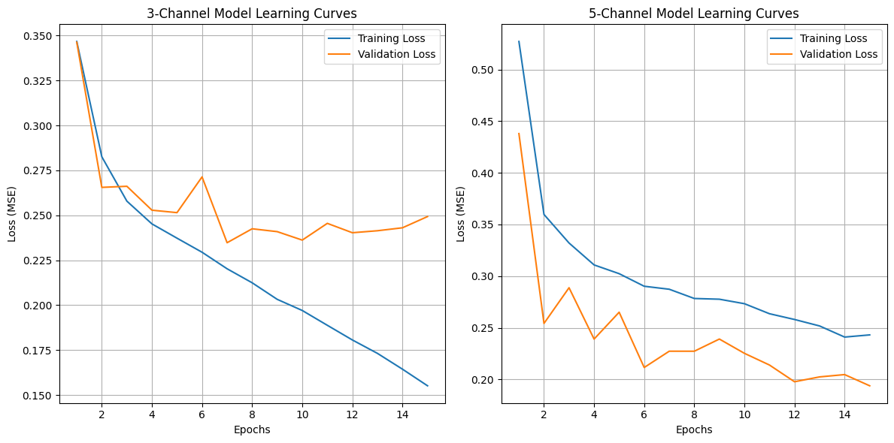
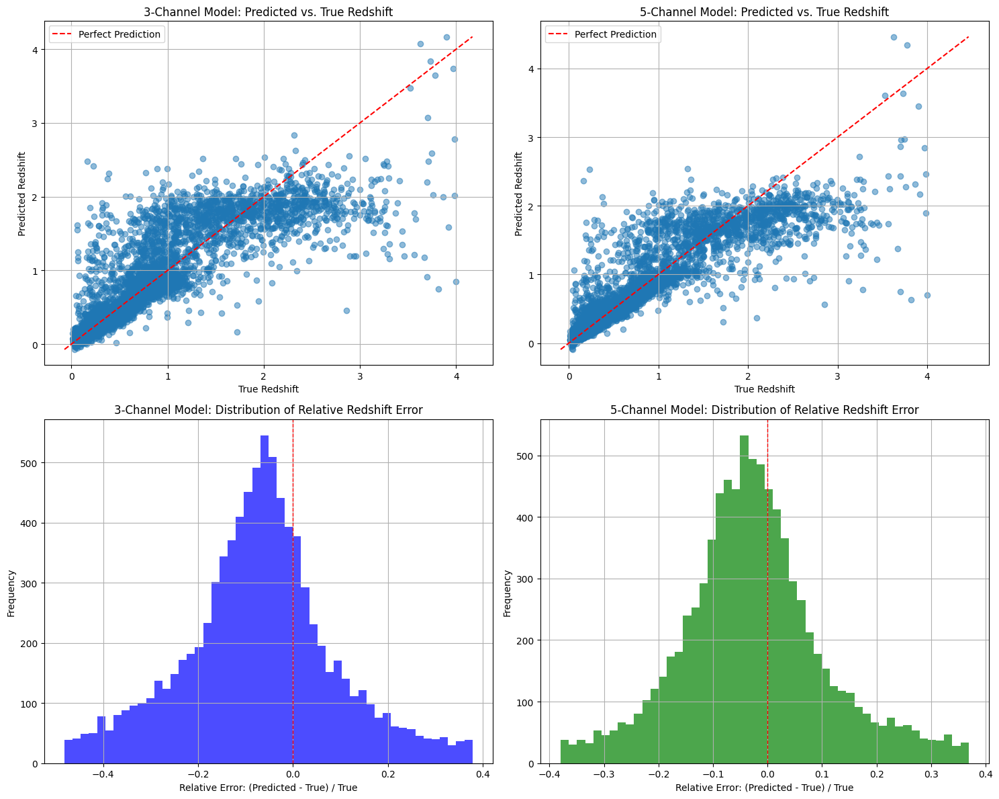
Performance Comparison:
3-Channel Model Test Loss: 0.241784
5-Channel Model Test Loss: 0.195239
Relative Error Statistics:
3-Channel Model - Mean: 0.0457, Median: -0.0575, Std: 0.7623
5-Channel Model - Mean: 0.0980, Median: -0.0195, Std: 0.6470
Correlation Coefficients:
3-Channel Model: 0.8693
5-Channel Model: 0.8972
Test Loss Improvement: 19.25%
Note#
In this part(Bonus) I reloaded all the previous codes that are necessary, because after the kernal restarted, all the variables are lost, and it will take too much time to rerun all the previous questions.
From the learning curves, we find that the validation loss has a significant drop in 5 channel model compared with 3 channel model. The test loss improved 19.25% from 0.241784 to 0.195239.
The correlation coef of 5-Channel Model(0.8972) has slight increase compared with 3-Channel Model(0.8693)
The loss distribution of 5-channel model is more centralized compared with 3-channel model. But it is weird that the mean relative error is higher for 5-channel model.
In general, adding more channels does improve the model’s efficiency, this indicates that these extra infrared bands contain important information that can help predict galaxy redshifts.